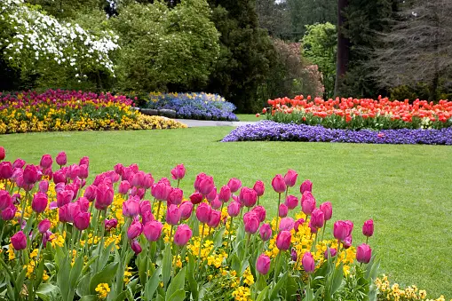

Spring Bloom
The garden awakens with the colors of spring. Tulips and daffodils make the first appearance.
Explore the beauty of our community garden through our collection of seasonal photographs. Each image captures the unique aspects and events of our garden.
The garden awakens with the colors of spring. Tulips and daffodils make the first appearance.
Our community comes together to harvest the fruits of their labor during the summer months.
Autumn brings a fiery display of colors with the changing leaves and late-blooming flowers.
The garden rests under a blanket of snow, offering a peaceful and quiet landscape.